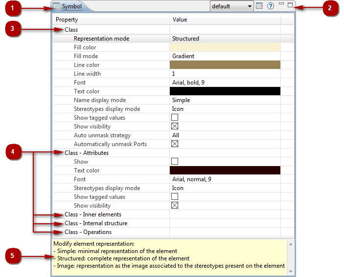

The Symbol view¶

Key:
- 1. The “Symbol” view tab.
- 2. The “Symbol” view toolbar.
- 3. Properties of the main element.
- 4. Properties of sub-elements.
- 5. Help field.
Main symbol view services¶
From the “Value” cell of the property of your choice:
- Enter/Modify a property [Left-click] : Makes the “Value” field of the property active, enabling you to enter or modify information in it.
From the Symbol toolbar:
- Select a predefined style [] : Selects a predefined style and applies it to the element in question.
- Cancel local changes [] : Cancels the changes made to the element in question.
- Display help [] : Shows/hides the help on the property in question.
Note: For more information, see “Setting graphic options in diagrams”.